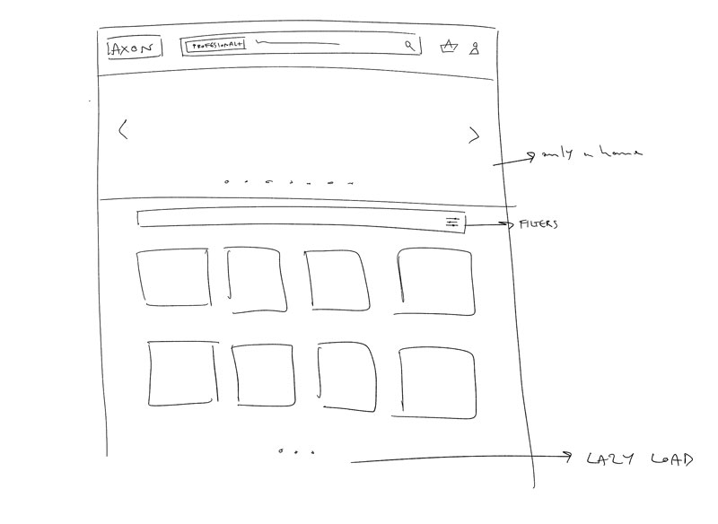
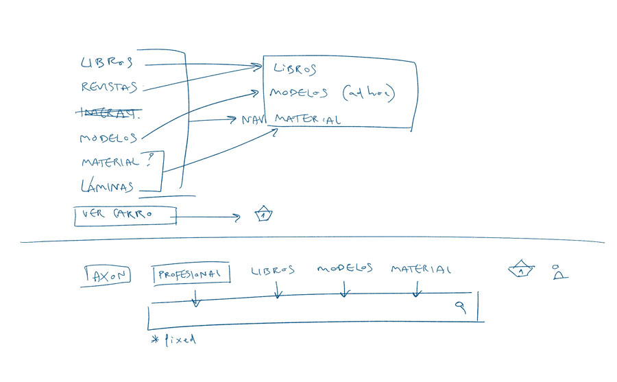
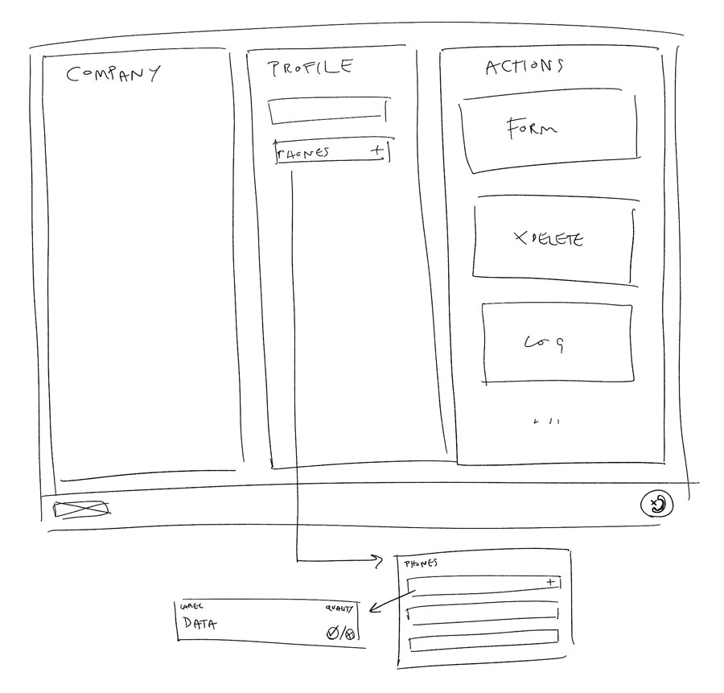
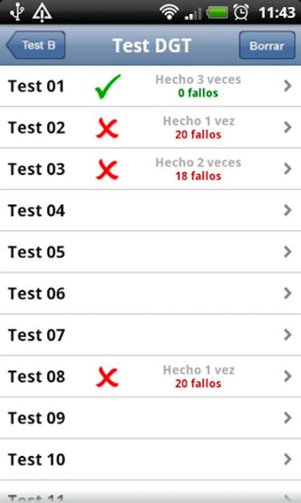

Cover Letter
When I was a little, I would peel off the labels from shampoo bottles. Those labels served a purpose -as I my annoyed dad, pointed out; they let you tell shampoo and body gel apart-, but I found them confusing, packed with irrelevant information repeated in spanish and portuguese and were, in any case, very ugly. And relevance is always relative to the intended audience. Those bottles bomb users with information that is actually meant for the buyer. I, as a user, needed no more than a word on that label. A symbol, a single letter, maybe even a color, had we agreed to a color code - which we didn’t.
I have a knack for communication relevancy. I find excess very annoying -and kind of tacky-. Digital users tend to agree with me: too much information, too many options, even too much blank space are every day harder to swallow. The best user experience is the one tailored to the audience at hand: this means users get to unravel your storytelling how and when they choose. In other words; the bottle has the information, but you can access it on your own terms.
I’m a passionate designer and I think it takes understanding to perform the best design. It’s the only way to figure out why the user is peeling off your label.
Professional experience
-
2016-Today
UX/UI DESIGNER
BinPar Digital Quality
I soon realized I needed to get into team dynamics, complex productcs... I needed a bigger job to learn the specifics of user experience. At BinPar, I learned to be a part of a multidisciplinary development taskforce. I became an independent front-end designer, shaping projects in environments such as ReactJS, through HTML5, CSS3 and Javascript and working together with different profiles in order to achieve experiences the user might find helpful.
-
2014-2016
ART DIRECTOR | UX-UI | ILLUSTRATOR
Freelance
I decided to go freelance so I could learn what I considered to be the most complete form of communication for a brand: UX design and all that it entails. Art Direction and UX design happen to be very similar; only the latter gave me a freedom in building experiences. And of course, I hung on to that permanently. As a freelance I took care of UX and UI Design, defining complete storytellings for my clients’ brands. Soon enough, the end-user journey and its pace became much more important to me than the specific colors, fonts and images.
-
2011-2013
ART DIRECTOR
Free Union Global Services
Fresh out of college, I started as an Advertising Art Director. I attended to my clients’ both communicational and art needs, coming up with storytelling solutions that I would generally execute myself in form of copies, artworks, even guidelines.
Skills
Languages
- SPANISH Native
- ENGLISH Bilingual
- ITALIAN Medium / High
Education
- 2007-2011 Degree in Advertising & PR UNNE University
- 2007-2011 Major in Creative Advertising UNNE University
- 2003-2006 English Filology University of A Coruña
- 1999-2001 International High School abroad International School of Naples
AXON
Specialised in redistributing medical publications and material, Axon has been experiencing a loss in sales for some time now. Convinced something can be done about it, they entrust us with the task of finding design-related solutions. The following video illustrate the state of affairs at the time.
UX Challenges
As we look closer, we identify several problems. First off: the site is looking old, very 90s, which gives off the vibe that the ones administrating the service are not familiarized with online transactions all that well. It's not only the look: there are more things wrong with the UI than there are right. CTA buttons with no consistent style, or no style at all, wrong highlighted content, no distribution of information according to importance, etc.
More over, the conversion process is hard, unfriendly and inconsistent. Depending on the type of product, you may or may not make your purchase online. In some cathegories, the user has to pick up the phone and place the order directly to the store. In some cases, he even has to download a pdf first, browse the items available in the pdf and get the reference number.
We also identified a complicated classification of products, that had more to do with internal organisation rather than end-user use. Browsing products is really hard, and you get lost while navigating because there are no back links, no breadcrumbs, or any kind indicator of where you are inside the site. Furthermore, the list of items you can see, even after a search, is limited to 15/16. There are more results, but you will have to try a more specific search in order to see other products.
All in all, AXON still has users, because they can find specialised producs for very specific profiles; but they're quickly moving on to Amazon or bigger distributers with better sites.
UX Solutions
My UX strategy is based in two principles: a specialised user will trust a small distributer if he feels he is competent and users will choose the experience that allows them to find what they need.
About the first: the user needs to feel AXON is capable of managing orders and deliveries online -at the very least-. No phone but for contact.
As for the experience, it actually feeds the first principle. We designed a search-centered UX, and a tag-based classification of products, keeping only three cathegories in the menu -that correspond with the most common search demand-.
In addition, there was a reason behind the complicated tree of navigation: the professional profile of the user. The intention was to show the user exactly what he might need. But instead of the complicated selection of field, we decided to give the user the possibility of defining his/her professional profile. The user benefits from taking the time to select it, but is not hurt by not doing so.
APSIS
APSIS MDM is a data gobernance company with very specific needs. Their employees have to make dozens of calls a day, and they need to make the process of updating data swifter and in a more controlled environment.
UX Challenges
To me, the most obvious reason for slow results was, in this case, employee misinformation. The operators know they need to complete a series of calls and update as much information as possible. But they don't have a real sense of how much of that update has been truly completed.
Senior employers will look over a certain database and determine whether or not it is right, and there is no follow-up: it simply goes back in the pool of profiles that need to be updated.
Many calls could be optimized if the operators knew the company they are calling might be related to other profiles that need to bee updated, or if they had access to the profile call log, etc. Also, not every operator has access to editing every field of the data base, but often finds out about a field that is wrong, or empty, and could signify it, but has no way or time.
In short, the main two problems are operator self-management and keeping all related information at hand and editable during the call.
UX Solutions
We came up with a dashboard for the operator that opens up with a percentage of finished calls, a percentage of quality and a preview of tasks. Quality comes from senior employees checking the quality of the operators' edited fields. The finished calls are only those in which a update of all the required fields has taken place: if no-one picked up, the call isn't finished, so it's still in the operator's to-do list. These two indicators are meant to make the operator aware of his progress and want to do better.
The juicy part of this project, however is the call interface. We determined that all information related should be present. If we are calling about a company's CTO, we are going to see the company's information, all the contacts related to that company -employees and former employees-, the call log of this specific contact, the usual call form, etc.
The operator has to be able to see that the information is there, but also able to flag a field if the conversation conveys the information is wrong. He also might need to cease the contact on the spot and make a new one -there might be a new CTO, for example-.
All the information flagged will appear in the task list of a superior employee, or someone with editing permissions for that specific field.
DRIVING HEROES
One of Spain’s most successful driving school franchise, Autoescuela Gala wants to make a game app for the theoretical exam, to get students directly to the driving lessons.
UX Challenges
The users are usually 18-to-22 year-old youths that are profoundly bored by the theoretical exam curriculum. It is, in fact, the kind of material that is not best learned by understanding, but by repeating over and over the same questions. In Spain, most young people resort to apps and webs that do this exactly: let you do tests -the official questions in the same format as the official exam- over and over, until your error rate is minimum.
Given the user, it was paramount that the game be perceived as somewhat 'cool' and fun, but also keeping present the objective of the game. These users are very driven by the objective of getting their lisence and will not experiment on something that might not be effective.
UX Solutions
The challenge here is how to make it better than other options that allow you to make tests until you're ready for the exam. The idea of making a game came from the client and it was a good start. We decided to go with a well-known format, from a very addictive game: Sugar Crush. The twist - an artificial intelligence that will recover the questions and chapters you are failing most at, and throw them at you once and again, until you remember the answers.
Personally, I do not agree with the story -too nerdy for this profile of users-. But it should not hurt too much, keeping in mind this same profile went through the cheesy storytelling of Candy Crush with no problem.
The user finds himself abducted by aliens that, long story short, make him answer questions about driving. It's a competition, so the user has to drive all through the map until the finish line. The map is divided in levels that are questions in the format of cards.
We wanted to give the user the feeling of competition, so a series of characters will come and go, win and lose and configure an in-app ranking where the user can see his progress. Also, there's a series of stickers that will be added to your car as you unlock goals.
There will be a ranking with your facebook friends also, which you'll be able to see on the map, which always gives the came a more social nature.
There's always the option to access the explanation for a card the user doesn't quite understand, turning your device to landscape mode. Understanding the answer makes it more likely that you remember it next time.